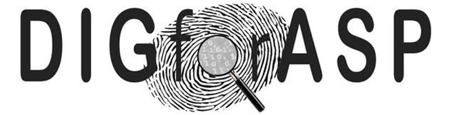

<main>
    <div class="uk-section uk-section-default">
        <div class="uk-container uk-margin-small">
            <div>
            <h1 class="uk-margin-remove-top">Profiling Hate Speech Spreaders on Twitter</h1>
            <ul class="uk-list">
                <li><span data-uk-icon="chevron-down"></span><a class="uk-margin-small-right" href="#synopsis">Synopsis</a></li>
                <li><span data-uk-icon="chevron-down"></span><a class="uk-margin-small-right" href="#task">Task</a></li>
                <li><span data-uk-icon="chevron-down"></span><a class="uk-margin-small-right" href="#award">Award</a></li>
                <li><span data-uk-icon="chevron-down"></span><a class="uk-margin-small-right" href="#data">Data</a></li>
                <li><span data-uk-icon="chevron-down"></span><a class="uk-margin-small-right" href="#evaluation">Evaluation</a></li>
                <!--                <li><span data-uk-icon="chevron-down"></span><a class="uk-margin-small-right" href="#submission">Submission</a></li>-->
                <li><span data-uk-icon="chevron-down"></span><a class="uk-margin-small-right" href="#results">Results</a></li>
                <li><span data-uk-icon="chevron-down"></span><a class="uk-margin-small-right" href="#related-work">Related Work</a></li>
                <li><span data-uk-icon="chevron-down"></span><a class="uk-margin-small-right" href="#task-committee">Task Committee</a></li>
                <li><span data-uk-icon="chevron-down"></span><a class="uk-margin-small-right" href="https://pan.webis.de/clef21/pan21-web/index.html#index-important-dates">Important dates</a></li>
                <li><span data-uk-icon="chevron-down"></span><a class="uk-margin-small-right" href="https://docs.google.com/forms/d/e/1FAIpQLSeSe4WicydfYCtKdYcDsFaPDmgtYuLwvXa63rmx248nxJhOyg/viewform">Register</a></li>
            </ul>
            </div>
            <div style="position:absolute;right:50px; top: 200px;">
                <b>Sponsored by</b><br/>
                <a href="https://www.symanto.net/" target="_blank">
                    
                </a>
            </div>
        </div>
        

        <div class="uk-container uk-margin-medium">

            <h2 id="synopsis">Synopsis</h2>
            <ul>
                <li>Task: Given a Twitter feed, determine whether its author spreads hate speech.</li>
                <li>Input: 
                   <ul>
                       <li>Timelines of users sharing hate speech towards, for instance, immigrants and women.</li>
                       <li>English and Spanish, 200 training cases/authors each (with 200 tweets per author) [<a href="https://zenodo.org/record/4603578" target="blank">data</a>]</li> 
                    </ul>
                               <!--; 300 training cases each-->
<!--                    Timelines of users sharing fake news as per PolitiFact and Snopes; English and Spanish; 300 training cases each [<a href="https://doi.org/10.5281/zenodo.3692319" target="blank">data</a>]-->
                </li>
                <li>Evaluation: Accuracy
                </li>
                <li>Submission: Deployment on TIRA [<a href="https://www.tira.io/task/pan21-profiling-hate-speech-spreaders-on-twitter">submit</a>]</li>
                <li>Baselines: Character n-Grams+Logistic, Word n-Grams+SVM, USE+LSTM, XLMR+LSTM, MBERT+LSTM, TFIDF+LSTM, LDSE</li>
            </ul>
            
            <h2 id="task">Task</h2>
            
            <p>Hate speech (HS) is commonly defined as any communication that disparages a person or a group on the basis of some characteristic such as race, 
            colour, ethnicity, gender, sexual orientation, nationality, religion, or other characteristics. Given the huge amount of 
            user-generated contents on Twitter, the problem of detecting, and therefore possibly contrasting the HS diffusion, 
                is becoming fundamental, for instance for fighting against misogyny and xenophobia. To this end, in this task, we aim at identifying possible 
                hate speech spreaders on Twitter as a first step towards preventing hate speech from being propagated among online users.</p>
            
            <p> After having addressed several aspects of author profiling in social 
                media from 2013 to 2020 (fake news spreaders, bot detection, age and gender, also together
                with personality, gender and language variety, and gender from a 
                multimodality perspective), this year we aim at investigating if it is possbile to discriminate authors 
                that have shared some hate speech in the past from those that, to the best of our knowledge, have never done it. </p>

            
            <p>As in previous years, we propose the task from a <b>multilingual</b> perspective:</p>

            <ul>
                <li>English</li>
                <li>Spanish</li>
            </ul>
             
            <b>NOTE:</b> Although we recommend to participate in both languages (English and Spanish), 
            it is possible to address the problem just for one language.
            
            
            
            <h2 id="award">Award</h2>
            <p>We are happy to announce that the best performing team at the 9th International Competition on Author Profiling will be awarded 300,- Euro sponsored by <a href="https://www.symanto.net/" target="_blank"><b>Symanto</b></a>
            <!--
                <br>
                This year, the winners of the task are (ex aequo):
                <br>
                <ul>
                    <li>Jakab Buda and Flora Bolonyai, Eötvös Loránd University, Hungary</li>
                    <li>Juan Pizarro, Chile</li>
            </ul>
            </p>-->
            
<h2 id="data">Data</h2>

<h3 class="uk-margin-small-top">Input</h3>
            The uncompressed dataset consists in a folder per language (en, es). Each folder contains:
            <ul>
                <li>A XML file per author (Twitter user) with 200 tweets. The name of the XML file
                    correspond to the unique author id.
                </li>
                <li>A truth.txt file with the list of authors and the ground truth.</li>
            </ul>
            The format of the XML files is:<br/>
            <pre class="prettyprint lang-xml" style="overflow-x: auto;">
    &lt;author lang="en"&gt;
        &lt;documents&gt;
            &lt;document&gt;Tweet 1 textual contents&lt;/document&gt;
            &lt;document&gt;Tweet 2 textual contents&lt;/document&gt;
            ...
        &lt;/documents&gt;
    &lt;/author&gt;
      </pre>

            The format of the truth.txt file is as follows. The first column corresponds to the author id. 
            The second column contains the truth label.<br>
            <pre class="prettyprint lang-xml" style="overflow-x: auto;">
    b2d5748083d6fdffec6c2d68d4d4442d:::0
    2bed15d46872169dc7deaf8d2b43a56:::0
    8234ac5cca1aed3f9029277b2cb851b:::1
    5ccd228e21485568016b4ee82deb0d28:::0
    60d068f9cafb656431e62a6542de2dc0:::1
    ...
    </pre>

            <h3 class="uk-margin-small-top">Output</h3>
            <p>Your software must take as input the absolute path to an unpacked dataset, and has to output
                for each document of the dataset a corresponding XML file that looks like this:</p>
            <pre class="prettyprint lang-xml" style="overflow-x: auto;">
    &lt;author id="author-id"
        lang="en|es"
        type="0|1"
    /&gt;
                              </pre>
            <p>The naming of the output files is up to you. However, we recommend to use the author-id as
                filename and "xml" as extension.</p>
            <p><b>IMPORTANT!</b> Languages should not be mixed. A folder should be created for each language
                and place inside only the files with the prediction for this language. </p>
       
            <h2 id="evaluation">Evaluation</h2>
            The performance of your system will be ranked by accuracy. 
            For each language, we will calculate individual accuracies in discriminating between the two classes. 
            Finally, we will average the accuracy values per language to obtain the final ranking.
    
            
            <h2 id="results"> Results</h2>
            
                        <table class="uk-table uk-table-divider uk-table-small uk-table-hover">
                <thead>

                <tr>
                    <th align="left">POS</th>
                    <th align="left">Team</th>
                    <th align="left">EN</th>
                    <th align="left">ES</th>
                    <th align="left">AVG</th>
                </tr>
                </thead>
                <tbody>
<tr><td>1</td><td>dinuovo</td><td>73,0</td><td>85,0</td><td>79,0</td></tr>
<tr><td>2</td><td>CIC</td><td>73,0</td><td>83,0</td><td>78,0</td></tr>
<tr><td>2</td><td>tamayo</td><td>74,0</td><td>82,0</td><td>78,0</td></tr>
<tr><td>4</td><td>andujar</td><td>72,0</td><td>82,0</td><td>77,0</td></tr>
<tr><td>4</td><td>anitei</td><td>72,0</td><td>82,0</td><td>77,0</td></tr>
<tr><td>4</td><td>anwar</td><td>72,0</td><td>82,0</td><td>77,0</td></tr>
<tr><td>7</td><td>pagnan</td><td>73,0</td><td>80,0</td><td>76,5</td></tr>
<tr><td></td><td>LDSE [20]</td><td>70,0</td><td>82,0</td><td>76,0</td></tr>
<tr><td></td><td>char nGrams+Logistic</td><td>69,0</td><td>83,0</td><td>76,0</td></tr>
<tr><td>8</td><td>hoellig</td><td>73,0</td><td>79,0</td><td>76,0</td></tr>
<tr><td>9</td><td>bañuls</td><td>68,0</td><td>83,0</td><td>75,5</td></tr>
<tr><td>9</td><td>supaca</td><td>69,0</td><td>82,0</td><td>75,5</td></tr>
<tr><td>9</td><td>oleg</td><td>67,0</td><td>83,0</td><td>75,0</td></tr>
<tr><td>9</td><td>moreno</td><td>69,0</td><td>81,0</td><td>75,0</td></tr>
<tr><td>9</td><td>cervero</td><td>70,0</td><td>80,0</td><td>75,0</td></tr>
<tr><td>14</td><td>katona</td><td>70,0</td><td>79,0</td><td>74,5</td></tr>
<tr><td></td><td>word nGrams+SVM</td><td>65,0</td><td>83,0</td><td>74,0</td></tr>
<tr><td>15</td><td>bagdon</td><td>67,0</td><td>81,0</td><td>74,0</td></tr>
<tr><td>15</td><td>das</td><td>67,0</td><td>81,0</td><td>74,0</td></tr>
<tr><td>17</td><td>ikae</td><td>66,0</td><td>81,0</td><td>73,5</td></tr>
<tr><td>17</td><td>mata</td><td>70,0</td><td>77,0</td><td>73,5</td></tr>
<tr><td>19</td><td>lai</td><td>62,0</td><td>84,0</td><td>73,0</td></tr>
<tr><td>19</td><td>jain</td><td>66,0</td><td>80,0</td><td>73,0</td></tr>
<tr><td>19</td><td>villarroya</td><td>67,0</td><td>79,0</td><td>73,0</td></tr>
<tr><td>19</td><td>mktung</td><td>64,0</td><td>82,0</td><td>73,0</td></tr>
<tr><td>19</td><td>sercopa</td><td>67,0</td><td>79,0</td><td>73,0</td></tr>
<tr><td>19</td><td>castro</td><td>67,0</td><td>79,0</td><td>73,0</td></tr>
<tr><td>25</td><td>giglou</td><td>65,0</td><td>80,0</td><td>72,5</td></tr>
<tr><td>25</td><td>huertas</td><td>67,0</td><td>78,0</td><td>72,5</td></tr>
<tr><td>25</td><td>wentao</td><td>68,0</td><td>77,0</td><td>72,5</td></tr>
<tr><td>28</td><td>rus</td><td>61,0</td><td>83,0</td><td>72,0</td></tr>
<tr><td>28</td><td>tudo</td><td>65,0</td><td>79,0</td><td>72,0</td></tr>
<tr><td>30</td><td>jaiferhu</td><td>61,0</td><td>82,0</td><td>71,5</td></tr>
<tr><td>30</td><td>joshi</td><td>65,0</td><td>78,0</td><td>71,5</td></tr>
<tr><td>32</td><td>valiense</td><td>63,0</td><td>79,0</td><td>71,0</td></tr>
<tr><td>32</td><td>krstev</td><td>65,0</td><td>77,0</td><td>71,0</td></tr>
<tr><td>34</td><td>martin</td><td>65,0</td><td>77,0</td><td>71,0</td></tr>
<tr><td>35</td><td>gomez</td><td>58,0</td><td>83,0</td><td>70,5</td></tr>
<tr><td>35</td><td>bakhteev</td><td>58,0</td><td>83,0</td><td>70,5</td></tr>
<tr><td>35</td><td>MaNa</td><td>64,0</td><td>77,0</td><td>70,5</td></tr>
<tr><td>38</td><td>cabrera</td><td>62,0</td><td>78,0</td><td>70,0</td></tr>
<tr><td>38</td><td>esam</td><td>63,0</td><td>77,0</td><td>70,0</td></tr>
<tr><td>38</td><td>zhang</td><td>63,0</td><td>77,0</td><td>70,0</td></tr>
<tr><td>41</td><td>dudko</td><td>61,0</td><td>78,0</td><td>69,5</td></tr>
<tr><td>41</td><td>meghana</td><td>64,0</td><td>75,0</td><td>69,5</td></tr>
<tr><td>43</td><td>rubio</td><td>59,0</td><td>79,0</td><td>69,0</td></tr>
<tr><td>43</td><td>uzan</td><td>62,0</td><td>76,0</td><td>69,0</td></tr>
<tr><td>45</td><td>herrero</td><td>57,0</td><td>80,0</td><td>68,5</td></tr>
<tr><td>46</td><td>puertas</td><td>60,0</td><td>76,0</td><td>68,0</td></tr>
<tr><td></td><td>USE-LSTM</td><td>56,0</td><td>79,0</td><td>67,5</td></tr>
<tr><td></td><td>XLMR-LSTM</td><td>62,0</td><td>73,0</td><td>67,5</td></tr>
<tr><td>47</td><td>ipek</td><td>58,0</td><td>77,0</td><td>67,5</td></tr>
<tr><td>47</td><td>schlicht21</td><td>58,0</td><td>77,0</td><td>67,5</td></tr>
<tr><td>47</td><td>peirano</td><td>59,0</td><td>76,0</td><td>67,5</td></tr>
<tr><td>47</td><td>russo</td><td>55,0</td><td>80,0</td><td>67,5</td></tr>
<tr><td></td><td>MBERT-LSTM</td><td>59,0</td><td>75,0</td><td>67,0</td></tr>
<tr><td>51</td><td>kazzaz</td><td>55,0</td><td>77,0</td><td>66,0</td></tr>
<tr><td>52</td><td>dorado</td><td>60,0</td><td>71,0</td><td>65,5</td></tr>
<tr><td>53</td><td>kobby</td><td>53,0</td><td>77,0</td><td>65,0</td></tr>
<tr><td>53</td><td>kern</td><td>54,0</td><td>76,0</td><td>65,0</td></tr>
<tr><td>53</td><td>espinosa</td><td>64,0</td><td>66,0</td><td>65,0</td></tr>
<tr><td>56</td><td>labadie</td><td>51,0</td><td>78,0</td><td>64,5</td></tr>
<tr><td>57</td><td>silva</td><td>56,0</td><td>69,0</td><td>62,5</td></tr>
<tr><td>57</td><td>garibo</td><td>57,0</td><td>68,0</td><td>62,5</td></tr>
<tr><td>59</td><td>estepicursor</td><td>51,0</td><td>72,0</td><td>61,5</td></tr>
<tr><td>60</td><td>spears</td><td>52,0</td><td>68,0</td><td>60,0</td></tr>
<tr><td></td><td>TFIDF-LSTM</td><td>61,0</td><td>51,0</td><td>56,0</td></tr>
<tr><td>61</td><td>barbas</td><td>46,0</td><td>50,0</td><td>48,0</td></tr>
<tr><td>62</td><td>dukic</td><td>78,0</td><td>-</td><td>-</td></tr>
<tr><td>63</td><td>tosev</td><td>70,0</td><td>-</td><td>-</td></tr>
<tr><td>64</td><td>amir</td><td>68,0</td><td>-</td><td>-</td></tr>
<tr><td>65</td><td>siebert</td><td>68,0</td><td>-</td><td>-</td></tr>
<tr><td>66</td><td>iteam</td><td>65,0</td><td>-</td><td>-</td></tr>


     
                    
                </tbody>
            </table>

             <h2 id="related-work">Related Work</h2>
            <ul>
                <li>[1] Valerio Basile, Cristina Bosco, Elisabetta Fersini, Dora Nozza, Viviana Patti, Francisco Rangel, Paolo Rosso, Manuela Sanguinetti (2019). 
                    <a href="http://personales.upv.es/prosso/resources/BasileEtAl_SemEval19.pdf" target="_blank">
                        SemEval-2019 task 5: Multilingual detection of hate speech against immigrants and women in Twitter.
                    </a>
                    Proc. SemEval 2019</li>

                <li>[2] Fabio Poletto, Valerio Basile, Manuela Sanguinetti, Cristina Bosco, Viviana Patti (2020). 
                    <a href="https://link.springer.com/article/10.1007/s10579-020-09502-8" target="_blank">
                        Resources and benchmark corpora for hate speech detection: a systematic review. 
                    </a>
                    Language Resources & Evaluation. https://doi.org/10.1007/s10579-020-09502-8</li>

                <li>[3] Paula Fortuna, Sérgio Nunes (2018). 
                    <a href="https://dl.acm.org/doi/10.1145/3232676" target="_blank">
                        A survey on automatic detection of hate speech in text.  
                    </a>
                    ACM Computing Surveys (CSUR) 51.4</li>

                <li>[4] Maria Anzovino, Elisabetta Fersini, Paolo Rosso (2018). 
                    <a href="https://link.springer.com/chapter/10.1007/978-3-319-91947-8_6" target="_blank">
                        Automatic Identification and Classification of Misogynistic Language on Twitter. 
                    </a>
                    In: Proc. 23rd Int. Conf. on Applications of Natural Language to Information Systems, NLDB-2018, Springer-Verlag, LNCS(10859), pp. 57-64</li>

                <li>[5] Elisabetta Fersini, Paolo Rosso, Maria Anzovino (2018). 
                    <a href="http://personales.upv.es/prosso/resources/FersiniEtAl_IberEval18.pdf" target="_blank">
                        Overview of the task on automatic misogyny identification at IberEval 2018. 
                    </a>
                    Proc. IberEval 2018</li>

                <li>[6] Elisabetta Fersini, Dora Nozza, Paolo Rosso (2018). 
                    <a href="http://personales.upv.es/prosso/resources/FersiniEtAl_Evalita18.pdf" target="_blank">
                        Overview of the Evalita 2018 task on automatic misogyny identification (AMI). Proc. 
                    </a>
                    EVALITA 2018</li>
                <li>[7] Cristina Bosco, Felice Dell'Orletta, Fabio Poletto, Manuela Sanguinetti, Maurizio Tesconi (2018). 
                    <a href="https://pdfs.semanticscholar.org/3eae/e4b2b8d9c7de52ba2386c73bb30097ec111c.pdf" target="_blank">
                        Overview of the EVALITA 2018 hate speech detection task. 
                    </a>
                    Proc. EVALITA 2018</li>


            <li>[8] Samuel Caetano da Silva, Thiago Castro Ferreira, Ricelli Moreira Silva Ramos, Ivandre Paraboni (2020). 
                <a href="https://www.cys.cic.ipn.mx/ojs/index.php/CyS/article/view/3478" target="_blank">
                    Data-driven and psycholinguistics motivated approaches to hate speech detection. 
                </a>
                Computación y Sistemas, 24(3): 1179–1188</li>

            <li>[9] Stiven Zimmerman, Udo Kruschwitz, Cris Fox (2018). 
                <a href="https://www.aclweb.org/anthology/L18-1404.pdf" target="_blank">
                    Improving hate speech detection with deep learning ensembles. 
                </a>
                In Proc. of the Eleventh Int. Conf. on Language Resources and Evaluation (LREC 2018)</li>

                <li>
                    [10] Simona Frenda, Bilal Ghanem, Manuel Montes-y Gomez, and Paolo Rosso. 
                        2019. Online hate speech  against women: Automatic identification of 
                        misogyny and sexism on twitter. Journal of Intelligent & Fuzzy 
                        Systems, 36(5):4743–4752.
                </li>
                
                <li>
                    [11] Francisco Rangel, Anastasia Giachanou, Bilal Ghanem, Paolo Rosso. 
                    <a href="http://ceur-ws.org/Vol-2696/paper_267.pdf" target="_blank">
                        Overview of the 8th Author Profiling Task at PAN 2020: Profiling Fake News Spreaders on Twitter.
                    </a>
                    In: L. Cappellato, C. Eickhoff, N. Ferro, and A. Névéol (eds.) 
                    CLEF 2020 Labs and Workshops, Notebook Papers. CEUR Workshop Proceedings.CEUR-WS.org, vol. 2696
                </li>
                <li>[12] Francisco Rangel and Paolo Rosso.
                    <a href="http://ceur-ws.org/Vol-2380/paper_263.pdf" target="_blank">
                        Overview of the 7th Author Profiling Task at PAN 2019: Bots and Gender Profiling in Twitter.
                    </a>
                    In: L. Cappellato, N. Ferro, D. E. Losada and H. Müller (eds.) 
                    CLEF 2019 Labs and Workshops, Notebook Papers. CEUR Workshop Proceedings.CEUR-WS.org, vol. 2380
                </li>
                <li>[13] Francisco Rangel, Paolo Rosso, Martin Potthast, Benno Stein.
                    <a href="http://ceur-ws.org/Vol-2125/invited_paper_15.pdf" target="_blank">Overview of
                        the 6th author profiling task at pan 2018: multimodal gender identification in
                        Twitter.</a>
                    In: CLEF 2018 Labs and Workshops, Notebook
                    Papers. CEUR Workshop Proceedings. CEUR-WS.org, vol. 2125.
                </li>
                <li>[14] Francisco Rangel, Paolo Rosso, Martin Potthast, Benno Stein.
                    <a href="http://ceur-ws.org/Vol-1866/invited_paper_11.pdf" target="_blank">Overview of
                        the 5th
                        Author Profiling Task at PAN 2017: Gender and Language Variety Identification in
                        Twitter.</a>
                    In: Cappellato L., Ferro N., Goeuriot L, Mandl T. (Eds.) CLEF 2017 Labs and Workshops,
                    Notebook
                    Papers. CEUR Workshop Proceedings. CEUR-WS.org, vol. 1866.
                </li>
                <li>[15] Francisco Rangel, Paolo Rosso, Ben Verhoeven, Walter Daelemans, Martin Pottast, Benno
                    Stein.
                    <a href="http://ceur-ws.org/Vol-1609/16090750.pdf" target="_blank">Overview of the 4th
                        Author
                        Profiling Task at PAN 2016: Cross-Genre Evaluations.</a> In: Balog K., Capellato L.,
                    Ferro N.,
                    Macdonald C. (Eds.) CLEF 2016 Labs and Workshops, Notebook Papers. CEUR Workshop
                    Proceedings.
                    CEUR-WS.org, vol. 1609, pp. 750-784
                </li>
                <li>[16] Francisco Rangel, Fabio Celli, Paolo Rosso, Martin Pottast, Benno Stein, Walter
                    Daelemans.
                    <a href=http://personales.upv.es/prosso/resources/RangelEtAl_PAN15.pdf"
                       target="_blank">Overview of the 3rd Author Profiling Task at PAN 2015.</a>In: Linda
                    Cappelato and Nicola Ferro and Gareth Jones and Eric San Juan (Eds.): CLEF 2015 Labs and
                    Workshops, Notebook Papers, 8-11 September, Toulouse, France. CEUR Workshop Proceedings.
                    ISSN
                    1613-0073, http://ceur-ws.org/Vol-1391/,2015.
                </li>
                <li>[17] Francisco Rangel, Paolo Rosso, Irina Chugur, Martin Potthast, Martin Trenkmann, Benno
                    Stein, Ben
                    Verhoeven, Walter Daelemans.
                    <a href="http://ceur-ws.org/Vol-1180/CLEF2014wn-Pan-RangelEt2014.pdf" target="_blank">Overview
                        of the 2nd Author Profiling Task at PAN 2014.</a> In: Cappellato L., Ferro N.,
                    Halvey M.,
                    Kraaij W. (Eds.) CLEF 2014 Labs and Workshops, Notebook Papers. CEUR-WS.org, vol. 1180,
                    pp.
                    898-827.
                </li>
                <li>[18] Francisco Rangel, Paolo Rosso, Moshe Koppel, Efstatios Stamatatos, Giacomo Inches.
                    <a href="http://ceur-ws.org/Vol-1179/CLEF2013wn-PAN-RangelEt2013.pdf" target="_blank">Overview
                        of the Author Profiling Task at PAN 2013.</a> In: Forner P., Navigli R., Tufis D.
                    (Eds.)Notebook
                    Papers of CLEF 2013 LABs and Workshops. CEUR-WS.org, vol. 1179
                </li>
                <li>[19] Francisco Rangel and Paolo Rosso
                    <a href="https://ojs.letras.up.pt/ojs/index.php/LLLD/article/download/6119/5761" target="_blank">
                        On the Implications of the General Data Protection Regulation on the Organisation of Evaluation Tasks.
                    </a>
                    In: Language and Law / Linguagem e Direito, Vol. 5(2), pp. 80-102
                </li>
                <li>[20] Francisco Rangel, Marc Franco-Salvador, Paolo Rosso
                    <a href="https://arxiv.org/abs/1705.10754" target="_blank">A Low Dimensionality Representation for Language Variety Identification. </a>
                    In: Postproc. 17th Int. Conf. on Comput. Linguistics and Intelligent Text Processing, 
                    CICLing-2016, Springer-Verlag, Revised Selected Papers, Part II, LNCS(9624), pp. 156-169 (arXiv:1705.10754)
                </li>
            </ul>

            <h2 id="task-committee">Task Committee</h2>
            <div data-uk-grid class="uk-grid uk-grid-match uk-grid-small thumbnail-card-grid">
                {% include people-cards/rangel.html %}
                {% include people-cards/rosso.html %}
                {% include people-cards/liz.html %}
                {% include people-cards/fersini.html %}
                {% include people-cards/chulvi.html %}
            </div>
            <div class="uk-container uk-padding-large uk-padding-remove-bottom">
                {% include organizations/clef-organizations-section.html year=2021 %}
            </div>
            <div class="uk-container uk-padding-large uk-padding-remove-bottom" style="text-align:center;">
                <a href="https://digforasp.uca.es/" target="_blank">
                    
                </a>
            </div>
        </div>
    </div>
</main>
